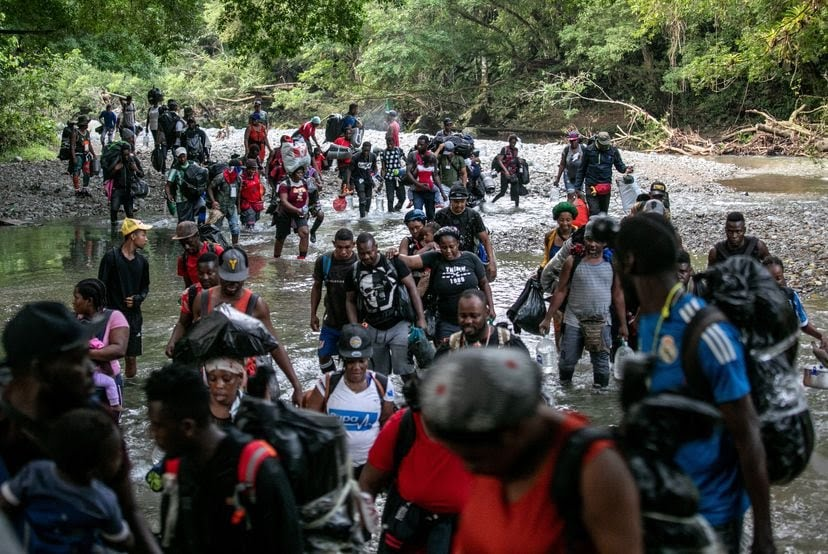
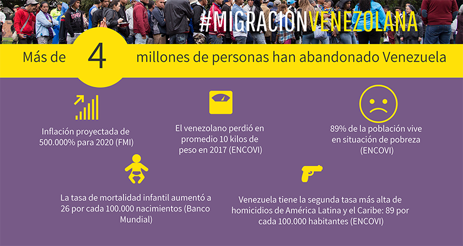

La migración es una realidad que no tiene fronteras

Venezolanos Refugiados y Migrantes en el mundo. 7.722.579 Venezolanos Refugiados y Migrantes en América Latina y el Caribe.6.538.756
Última actualización 30 de noviembre de 2023
La migración venezolana continúa. A noviembre de 2019, según ACNUR, más de 4,6 millones de personas han salido del país y el 80% de ellas está en otros países latinoamericanos. ¿Cómo pueden las comunidades receptoras aprovechar este potencial?
¿Cuantos kilómetros estás dispuesto a caminar para escapar del hambre? Para los venezolanos, no hay distancia suficiente para alejarse del colapso económico y social de su país.

Latinoamérica ha vivido una larga historia de flujos migratorios, sin embargo, hoy atraviesa un éxodo sin precedentes: desde 2016, más de 4,6 millones de mujeres, hombres y niños han salido de Venezuela en busca de un futuro mejor, según cifras de la agencia de refugiados ACNUR.